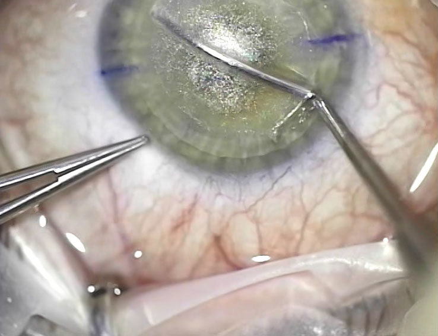
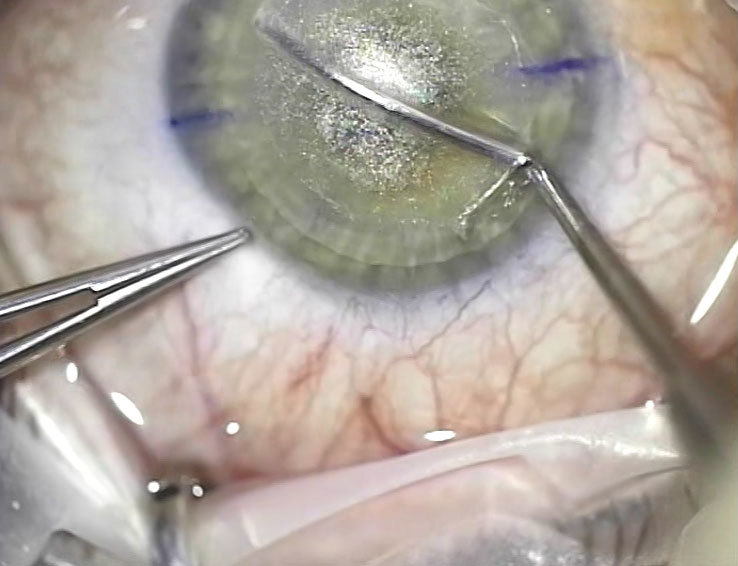

Četri veidi, kā slikta redze var ietekmēt bērnu mācīšanos
Atgriezt 100% redz un nekļūt aklam
Redzes asuma problēma šodien kļūst par vienu no aktuālākajām priekš visu vecumu cilvēkiem. Vai ir iespējams atgriezt redzi un uz visiem laikiem atbrīvoties no brillēm? Vai tā ir taisnība, ka pēc operācijas uz acīm iespējams kļūt aklam? Gan viens, gan otrs ir taisnība. Noskaidrosim, kā atgriezt redzi bez neatgriezeniskām sekām.

Laba redze — tas ir svarīgi
Acis ir orgāns, kam ne mazāk par citiem ir nepieciešamas rūpes. Ja par tām nerūpēties, ar laiku situācija pasliktināsies: redzi kritīsies stiprāk, sāks attīstīties acu slimības.
Ja jūs sākat izmantot kontaktlēcas vai brilles, ar laiku situācija neizbēgami pasliktināsies. Tā iemesls – acu muskuļu pavājināšanās. Brilles vai citi palīglīdzekļi vēl vairāk atslābina jau bez tā novājināto muskulatūru.
Redze pasliktinās – briļļu biezums palielinās, un tā gadu pēc gada, ja nevērsties pie pilnvērtīgas ārstēšanas.

Kā atgūt redzi
Starp pastāvošajiem redzes atgūšanas veidiem izskatīsim tos, kas garantē 100% rezultātu. To ir tikai divi — lāzera korekcija un atbilstošu preparātu lietošana.
Lāzera korekcija — ātrs, 80 gadījumos no 100 efektīvs, bet dārgs un ne vienmēr drošs veids skaidras bildes atgūšanai.
Diemžēl, pat pieredzējuši ķirurgi nedod absolūtu garantiju, ka pēc operācijas redzes atjaunošanas vietā, jūs nezaudēsiet to pavisam.
Lāzera iekārtu kvalitāte un ekspluatācijas ilgums, ārsta pieredze, neprecīza diagnoze un pat maza organisma īpatnība var negatīvi ietekmēt operācijas iznākumu.
 
Pie nedaudz ilgākas, toties absolūti drošas redzes atjaunošanas metodes attiecas preparātu acu muskulatūras tonusa atjaunošanai lietošana. Tieši no tās stāvokļa atkarīgs tas, kā mēs redzam šo pasauli.
Šobrīd Eiropā ir viens preparāts, kurš ir izgājis klīniskos pētījumos un pierādījis efektivitāti praksē — .
Tā sastāvā ir maksimālais pieļaujamais tonizējošo vielu daudzums uz augu bāzes, no kurām katrs ir vērsts uz atbrīvošanu no acu slimībām, akluma novēršanu un skaidras redzes atjaunošanu.

Pa gadu pastāvēšanas preparāts ļāva vairāk nekā 100 tūkstošiem cilvēku noņemt brilles un uz visiem laikiem atteikties no lēcām.
Tā izstrādei tika veltīti vairāk nekā 10 gadi. Vēl 4 gadus zinātnieki iztērēja klīnisko eksperimentu veikšanai.
Līdzekļa kolosāla efektivitāte saistīta ar sastāvu, kuram nav analogu, kurā iekļauti rauvolfijas, šikšas, jūras vīnogu un haizivs tauku ekstrakti.
Svarīga loma kapsulu izstrādē bija aukstajai ūdens ekstrakcijas metodei, kas ļāva saglabāt bioķīmisko vitamīnu sastāvu pilnā apmērā.
Preparāta aktīvās vielas spēj pacelt redzei nepieciešamo vitamīnu līmeni pirms veselīgu atzīmi 2-4 nedēļu laikā. Pa to laiku izlīdzinās mikroelementu balanss, kas atbild par augstu redzes asumu.
Tas ved pie dabīga acs spiediena stabilizācijas, kā arī tonizē acs muskuļus, stiprina tīkleni un izlīdzina redzi līdz vienībai.

Kur nopirkt
Preparāta ražotājs atteicās no realizācijas caur aptieku tīklu, lai novērstu produkta viltošanu. var iegādāties tikai un vienīgi ražotāja vietnē, kur līdz 30.04.2020. uz to darbojas 50% atlaide.
Ja jūs sastapsiet aptiekā, paziņojiet par to pa karstās līnijas tālruni ražotāja mājas lapā. Sargiet savu redzi.
Mmmmm.... burtiski pāris dienas atpakaļ aptiekā redzēju to…
Tas ir viltojums, paziņojiet aptiekas adresi pa numuru vietnē. Es tā arī uzķēros, pat nopirku, izdzēru visu kursu, nekādas jēgas. Piezvanīju uz karsto līniju sūdzēties un sapratu, ka pati esmu vainīga. Pēc pusgada dzēru oriģinālu un tad tikai sapratu, kāda ir atšķirība. Ar īsto redze atgriezās pilnībā!
Man noteica tīklenes atslāņošanos. Bail bija nežēlīgi. Protams, ārsti pirmām kārtām piedāvāja operāciju. Es atteicos par laimi. Izdzēru kursu un nekāda operācija nebija vajadzīga.
Fantastika kaut kāda. Vai tiešām tā darbojas?
Es personīgi un daudzi mani paziņas dzēra šo preparātu. Ar visu atbildību varu teikt, ka tas darbojas uz visiem 100.
Jau nedēļu lietoju un redze ir uzlabojusies par vienu vienību!
Aktuāls tagad raksts, visi pie datoriem strādājam. Redzi ir jāsargā.
Arī es vēlos atstāt atsauksmi. Uztrauca vecuma tālredzība, bija aizdomas uz kataraktas attīstību. Bailes no operācijas pārvarēt nevaru: daudz dzirdēju par smagām komplikācijām. Preparāts palīdzēja ievērojami uzlabot redzi un likvidēt kataraktas draudus viena kursa laikā.
Zinu personīgi cilvēkus, kuriem acu operācija gāja slikti. Agrāk pats krāju uz redzes korekciju, tad nolēmu, ka tā riskēt nevar, tomēr acis... Pasūtīju , ceru, ka palīdzēs.
Palīdzēs, nešaubieties. Galvenais, sekot speciālista norādījumiem (jūs konsultēs pirms nosūtīšanas). Es esmu dzīvs piemērs tam, ko redzi bez operācijas var atgriezt! Nevaru izteikt, cik esmu laimīga redzēt skaidru bildi, nevis šķielēt, un izmest beidzot šīs piegriezušās brilles!